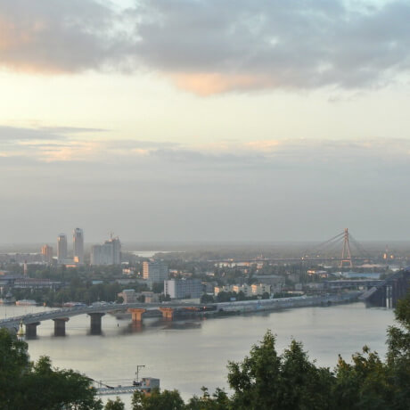

Kyiv, Ukraine
Kyiv (or Kiev), Ukraine's capital, is a large city located on the shores of the Dnipro river. Of course, no one in their right mind would swim in the river, unless they grew up here, in which case they've probably tried it at some point. Summers are hot here, and the winters are drafty, but the fall and the spring are are absolutely amazing.
The city itself is a mix of pre-revolution, post-war and soviet architecture, all of it sprinkled with modified balconies. If you're on the right bank of the Dnipro, the landscape is difficult to traverse for people on bikes and those wearing heels. The left bank is considered far less interesting and prestigious though, even by people who live on the far outskirts of the right one.